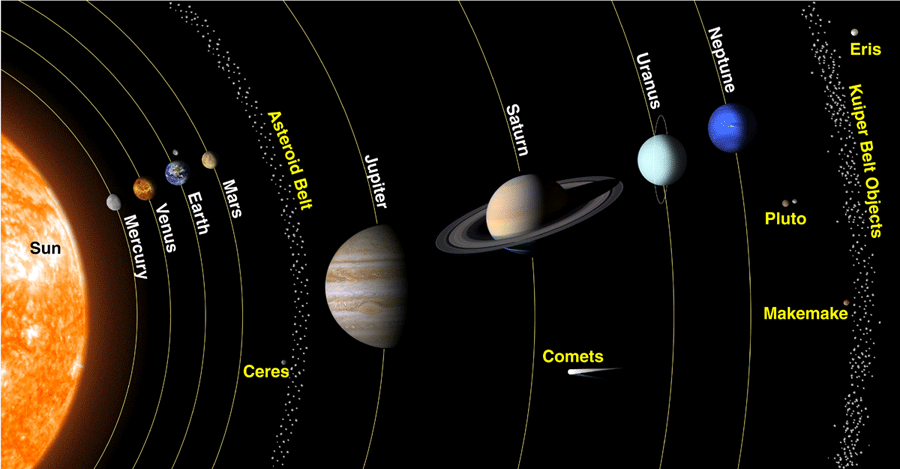
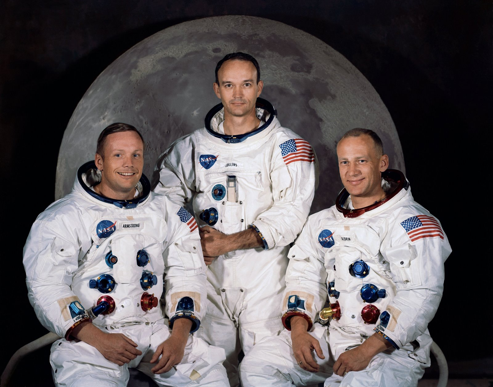

Guide to Space

The Solar System:
The Sun
Mercury
Venus
Earth
The Moon
Mars
The Asteroid Belt
Jupiter
Jupiter’s Moons
Galilean Moons
Saturn
Saturn’s Moons
Uranus
Uranus’ Moons
Neptune
Neptune’s Moons
Dwarf Planets
The Kuiper Belt
The Oort Cloud

Apollo 11 was the spaceflight that landed the first two humans on the Moon. Mission commander Neil Armstrong and pilot Buzz Aldrin, both American, landed the lunar module Eagle on July 20, 1969, at 20:18 UTC. Armstrong became the first to step onto the lunar surface six hours later on July 21 at 02:56:15 UTC; Aldrin joined him about 20 minutes later. They spent about two and a quarter hours together outside the spacecraft, and collected 47.5 pounds (21.5 kg) of lunar material to bring back to Earth. Michael Collins piloted the command module Columbia alone in lunar orbit while they were on the Moon's surface. Armstrong and Aldrin spent just under a day on the lunar surface before rendezvousing with Columbia in lunar orbit.
© Copyright 2017 uniSpace